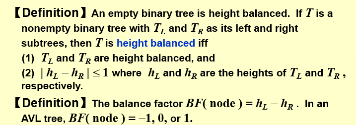
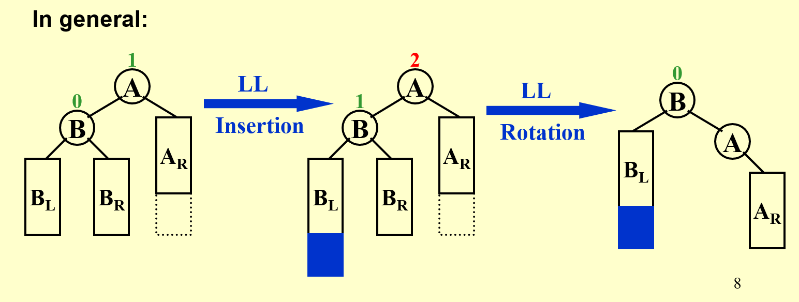
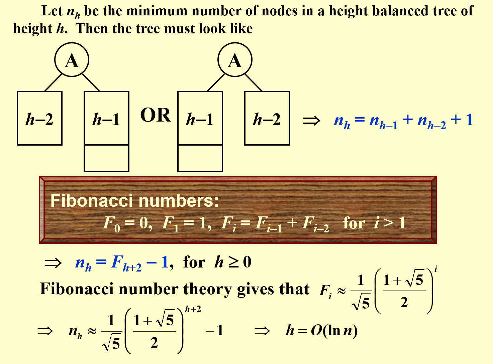
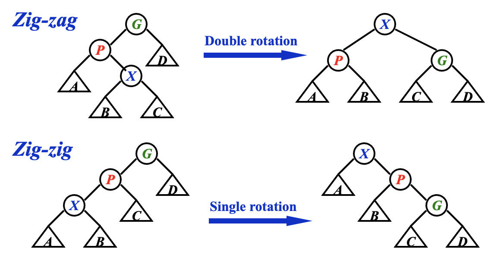
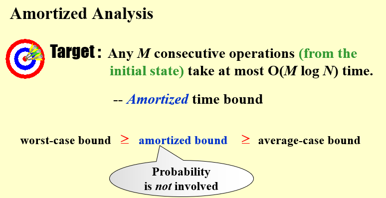
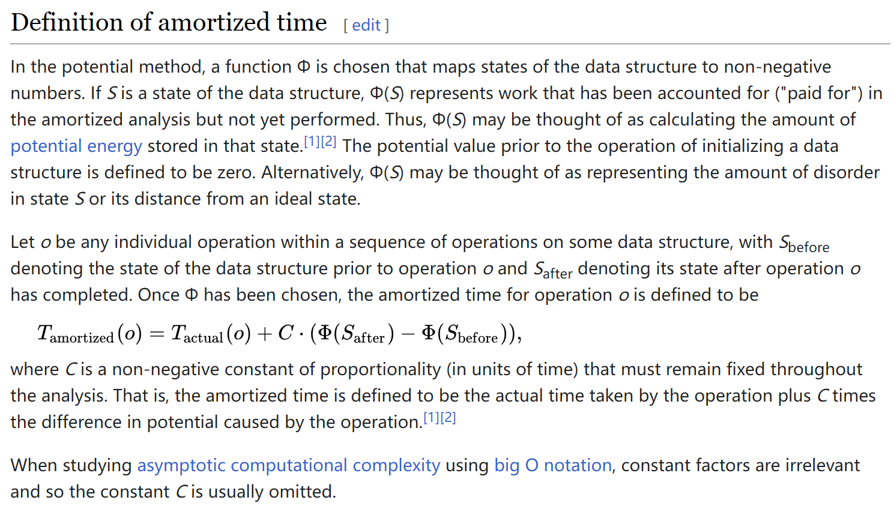
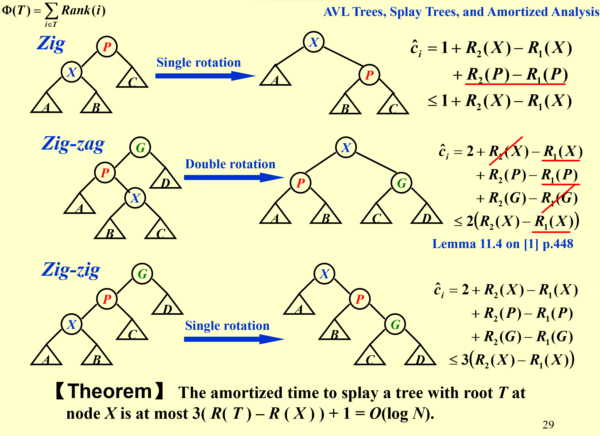

Advanced Data Structure
Intro
ADS, 全称为Advanced Data Structure, 浙江大学计科的专业课之一，难度较高
我的老师是 陈昊
Week 1
AVL Trees
Note
定义一种相对平衡的树，降低树的高度，加速插入和查找
Definition
Quote
OI Wiki: https://oi-wiki.org/ds/avl/

- 一个空二叉树是一个AVL树
- 如果二叉树 \(T\) 是一个 AVL 树，则其左右孩子树 \(T_l\) 和 \(T_r\) 也都应该是 AVL 树，且有 \(|h(T_l) - h(T_r)| \leq 1\)；
Balance
一个节点的 平衡因子(Balance Factor,BF) 用来描述一个节点的平衡程度，对于节点 \(T_p\), 其左子树为 \(T_l\), 右子树为 \(T_r\), 则:
所以上面的第 2 条又可以写成：
- 如果二叉树 \(T\) 是一个 AVL 树，则其左右子树 \(T_l\) 和 \(T_r\) 也都应该是 AVL 树，且有 \(BF(T_p) \in \{0, \pm 1\}\)；
Methodology
判断一棵树是否是AVL树，以及如何维护它
trouble makertrouble finderRR rotation / LL rotation单旋LR rotation / LR rotation双旋
Definition
LL | RR

LR | RL

Analysis

Splay Trees
AVL Trees 需要储存 BF，Splay Trees 想在节约 Size 的同时，尽量快

Main Idea
Methodology
首先我们做一个约定，对于任意一个节点 X，我们记其父节点为 P(Parent)，其父节点的父节点为 G(Grandparent)。
- 当我们访问到某个点 X 时：
- 如果 P 是根节点，则直接进行一次 Single Rotation{target="_blank"}(LL 或者 RR Rotation，将 X 转到根节点；
- 如果 P 不是根节点：
- 当情况为 LR / RL 时，进行一次 LR Rotation 或 RL Rotation，我们称之为 zig-zag；
- 当情况为 LL / RR 时，进行两次 Single Rotation{target="_blank"}，使得 X、P、G 的顺序逆转，像跷跷板一样，我们称之为 zig-zig；
- 不断对 X 进行 Splay 操作，直到 X 成为根节点；

Amortized Analysis
对Splay Trees的分析采用了Amortized Analysis
wiki
Wiki: 在计算机科学中，是用于算法分析中的方法，平摊分析常用于分析数据结构（动态的数据结构），在使用平摊分析前须知道数据结构各种操作所可能发生的时间，并计算出最坏情况下的操作情况并加以平均，得到操作的平均耗费时间。平摊分析只能确保最坏情况性能的每次操作耗费的平均时间，并不能确认平均情况性能。
Definition

Methodology
Amortized Analysis 的三种方法
Aggregate analysis
累积连续 M 次操作的代价，再除以 M
Accounting method
设 n 次连续操作的 actual cost 是 \(c_i\), 找到 \(c_i\)的平滑上界\(\hat{c}_i\) 作为 amortized cost.
Potential method

example of Splay Trees
- 凭感觉选择合适的势函数 \(\Phi\)...
- Splay Trees的一次维护中要进行三种不同的操作，分析每种操作的Amortized Cost，合理的放缩选择上界（例如此例中，zig操作只可能出现一次，所以可以保留常数项） 
-
综合每步操作的放缩后的结果，得到一次维护的Amortized Cost
\[ \begin{align} \hat{c}_{rotate\ x\ to\ root} &= \hat{c}_{zig} + \sum{\hat{c}_{{zig\ zag}_i} + \sum{\hat{c}_{{zig\ zig}_i}}} \\ & \leq 1 + R(T) - R(X) \\ & \leq O(\log N) \end{align} \]